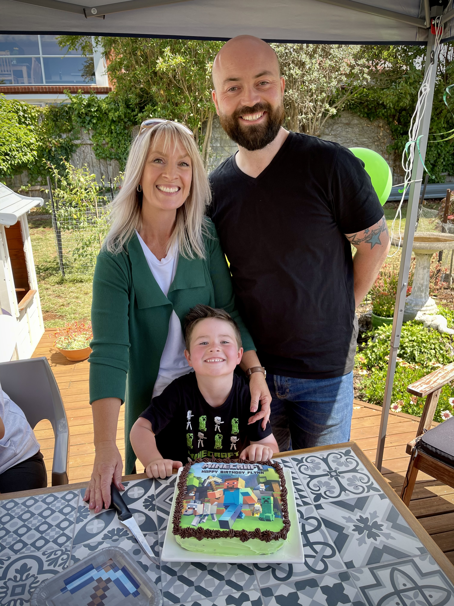
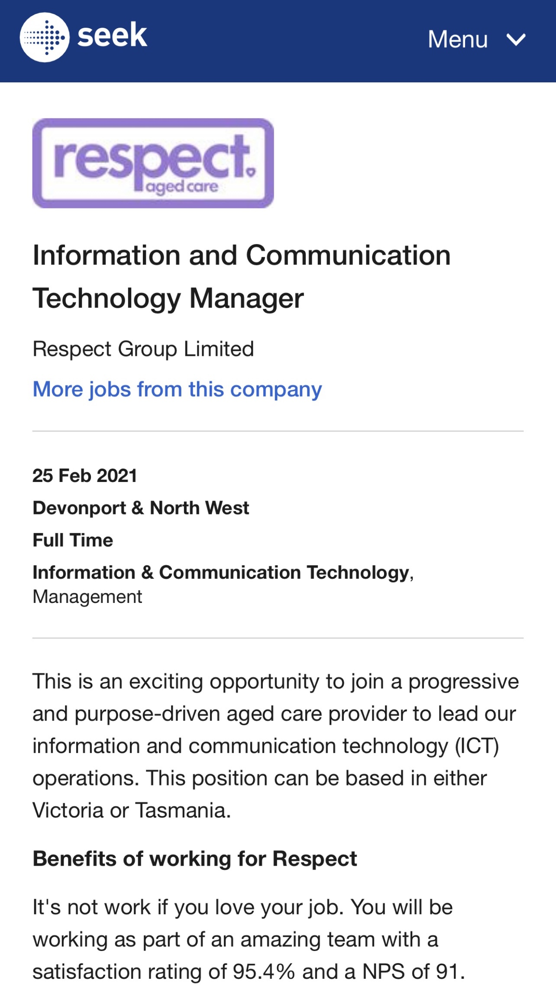
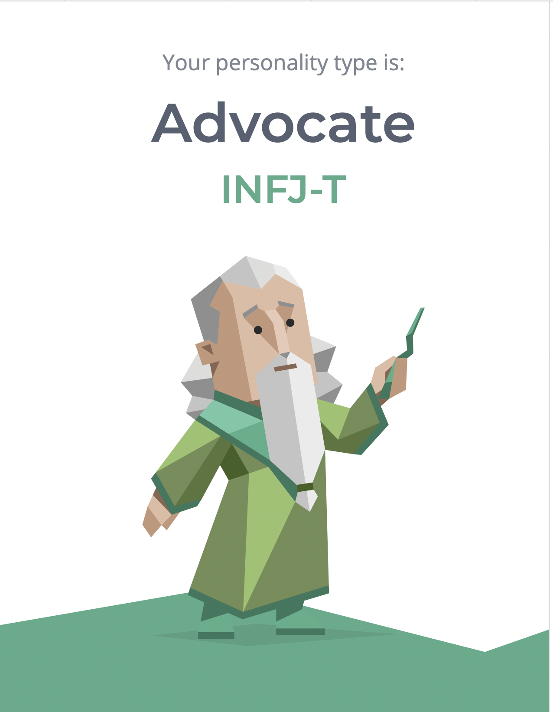
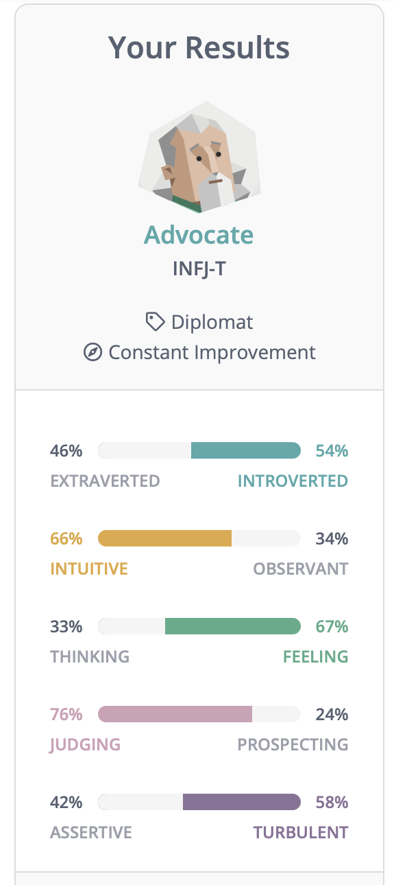
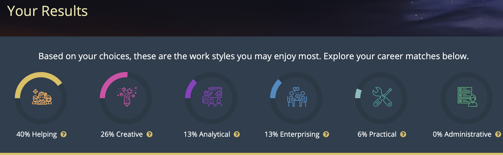

Peter Aird

Personal Information
Student ID S391092
https://peteraird.github.io/Assessment1/
Nationality: Australian, Caucasian, Scottish ancestry.
Language Spoken: English.
Education: year 12,
Certificate 3 & 4 in retail.
Corporate training courses, in a variety of subjects, people management, dealing with conflict, time management, HR management, sales training
Disability support courses, including first aid, healthy bodies, and the administration of medication.
I have a beautiful partner, Keryn and a 6year old son, Flynn, a cat named Spot and a Chocolate Lab Called Coco, and I'm very much a sci-fi junkie.
I work full-time Monday to Friday as a Territory Manager for The Arnott's Group.
I also work part-time for Tassiecare in Disability Support as a Direct Service Coordinator and Tech Support.
For my Arnott's job, I'm managed out of NSW. I do a lot of zoom meetings, work with Microsoft Office and Salesforce. I have a small team of three Representatives working under me, right across the north of the state. I'm a part of the field tech team and have already helped roll out different tech projects across Australia and New Zealand.
Hi, Pete, here from Tassie.

Interest in IT
Ideal Job
Information and Communication Technology Manager
Respect Group Limited
http://respect.com.au/employment/
www.seek.com.au
www.16personalites.com
Results from Myers-Briggs Test
 
• Creative – Advocate personalities enjoy finding the perfect solution for the people they care about. To do this, they draw on their vivid imagination and their strong sense of compassion. This can make them excellent counsellors and advisors.
• Insightful – Advocates typically strive to move past appearances and get to the heart of things. This can give them an almost uncanny ability to understand people’s true motivations, feelings, and needs.
• Principled – People with the Advocate personality type tend to have deeply held beliefs, and their conviction often shines through when they speak or write about subjects that matter to them. Advocates can be compelling and inspiring communicators, with their idealism persuading even the hardest of sceptics.
• Passionate – Advocates can pursue their ideals with a single-mindedness that may catch others off guard. These personalities rarely settle for “good enough,” and their willingness to disrupt the status quo may not please everyone. That said, Advocates’ passion for their chosen cause is a key aspect of their personality.
• Altruistic – Advocates generally aim to use their strengths for the greater good – they rarely enjoy succeeding at other people’s expense. They tend to think about how their actions affect others, and their goal is to behave in a way that will help the people around them and make the world a better place.
Learning style test
http://www.educationplanner.org/students/self-assessments/learning-styles.shtml
What's Your Learning Style? The Results
Peter Aird's scores:
• Auditory: 35%
• Visual: 50%
• Tactile: 15%
Job Outlook Test

I found these results fascinating. My results from the Myers-Briggs test, Advocate, they are spot on. They were me to a tee. I was even excited that there were other people out there with my kind of personality. The Learning style test wasn’t a surprise. I feel like I’m a very visual learner. I learn differently from other people. But I was surprised about the job outlook test, the my career matches. I never saw myself as an early childhood educator, but now I stop and think about it, maybe this is something that I should consider.
Thinking about my behaviour within the team and considering the results from the test. I should try to focus on my strengths, helping people that may need it, listen to people’s problems and try to come from a place of understanding and caring. I should realize that I can be very single-minded and want everything to be just right. Don’t let “perfect” be the enemy of the “good’.
When forming a team, I should let them know what kind of personality I am, that I’m a visual learner, and may learn differently from them. That I am here to help and that we’re all in this together. One team, one dream. I should definitely read other people’s personality profiles to see if we can work together more effectively. There are challenges in us working together, I should look at ways of overcoming the differences.
From the beginning, the ability app should have people who struggle with accessibility in mind. The app should be straightforward and easy to use. Ideally, it would run automatically, starting after setup. The start screen should be very simple with five options, an eye (seeing), a mouth (talking), an ear (hearing), a finger (touch) and a letter of the alphabet (for literacy). The options should be big buttons with a flat easy to see design. That is easy to tap and use. There should also be a VoiceOver that automatically starts, describing what the different buttons are and what they represent. Voice control should also begin. That way, the person with the disability should be able to select what they need help with, without looking for the setting or struggling to tap the correct area. Once the user selects the option after that, it would move to the second screen. Where there would be a follow-up question, for example, if the user chose the eye option, the next question could be, do you have a little trouble seeing, a lot of trouble seeing or have no ability to see. Same as the previous screen, the voice-over would automatically start reading these options. Depending on what option the use of selected, the app would then suggest what settings to change, where to find them and how to change them.
For example, the user has chosen “I have a little trouble seeing”, then the app will go to the next page. Voice control would stop at this point as it would not be required. The app would display the suggestions on how to improve iOS for people who have a little trouble seeing. The relevant information will be spread out over the next couple of pages. The user can just swipe left to access. Each page would be devoted to different parts of relevant accessibility settings. For example, Display & Text size. With a description of what settings could be changed, with a shortcut that links into the menu. Here the user can change the appropriate settings. Below this information, there would be a video showing how the changed setting will differ from what it is currently set to. This will help familiarise the user with the accessibility feature before it takes effect.
Although the iPhone has a lot of accessibility features, it may not cover all disabilities.
That’s where the ability app comes in. It could suggest other apps to our user that they might like to download. For example, if a user was non-verbal, and we have already recommended all the changes that can be changed in accessibility’s, after that point, we can then suggest other apps that may help them. You should try the TouchChat app. Click here to download it from the App Store.
Personal Profile
I’m an ADVOCATE.
Visual
My Project Idea
Overview
My project idea is an ability app. That helps you navigate the minefield that is the accessibility features on your phone. The app works by analysing your disability’s, how you struggle with technology. Then it takes you through the different accessibility settings on your device. Settings that you will need to adjust to improve your user experience on your device, making it easier to use. It can even train you on the changes, teaching you how to use these accessibility settings and also recommend different apps to download for your individual condition.
Motivation
Working in the disability sector, I have seen many people with disabilities struggle to use their device, trying to use it exactly how it came out of the box and not changing any kind of settings. This is frustrating, seeing people struggle with technology and not knowing or not realising that it can be easier for them. People don’t naturally go looking for the accessibility features. They put up with small print that they’re not capable of seeing. And just get frustrated and even blame themselves for not using it properly. The problem is not theirs. The problem is with the tech industry assuming everyone is the same and “normal’.
This is very important and personal to me. I myself use some accessibility features, and I often help other people who are struggling to use their technology.
Description
This description is based upon iOS as I’m familiar with that operating system. Versions of this app can be designed for Android, Windows, macOS and even a website, where you can just select the device.
Sills Required
We will need to learn Back-end computing skills, modern programming skills for Swift, JavaScript and other cross-platform app development tools. The ability to code collectively, using GitHub. We should be able to find training websites where we can learn how to make an app reasonably easy. The only potential drawbacks are that we will need a deep understanding of how accessibility works on iOS and Android and can understand how people use and struggle with technology, what different disabilities inhibit people’s ability to use technology. We may need to source a consultant qualified in disabilities that can step us through and coach us on how people’s disabilities inhibit them from using their devices, helping us learn and understand where we may be going wrong.
Outcome
if we can master these skills and develop this app, we will be not only helping ourselves but will be helping other people who struggle with technology in their day-to-day lives and hopefully will make their lives better for it. An ability app that really does give people the ability to use technology for the betterment of themselves.
Reference:
Information and Communication Technology Manager Respect Group Limited http://respect.com.au/employment/ www.seek.com.auPersonal Profile www.16personalites.com Results from Myers-Briggs Test
Learning style test http://www.educationplanner.org/students/self-assessments/learning-styles.shtml
Job outlook test https://joboutlook.gov.au
How to become an android developer https://www.udacity.com/blog/2015/05/become-android-developer.html
website GitHub https://github.com
HTML Basic Examples https://www.w3schools.com/html/html_basic.asp